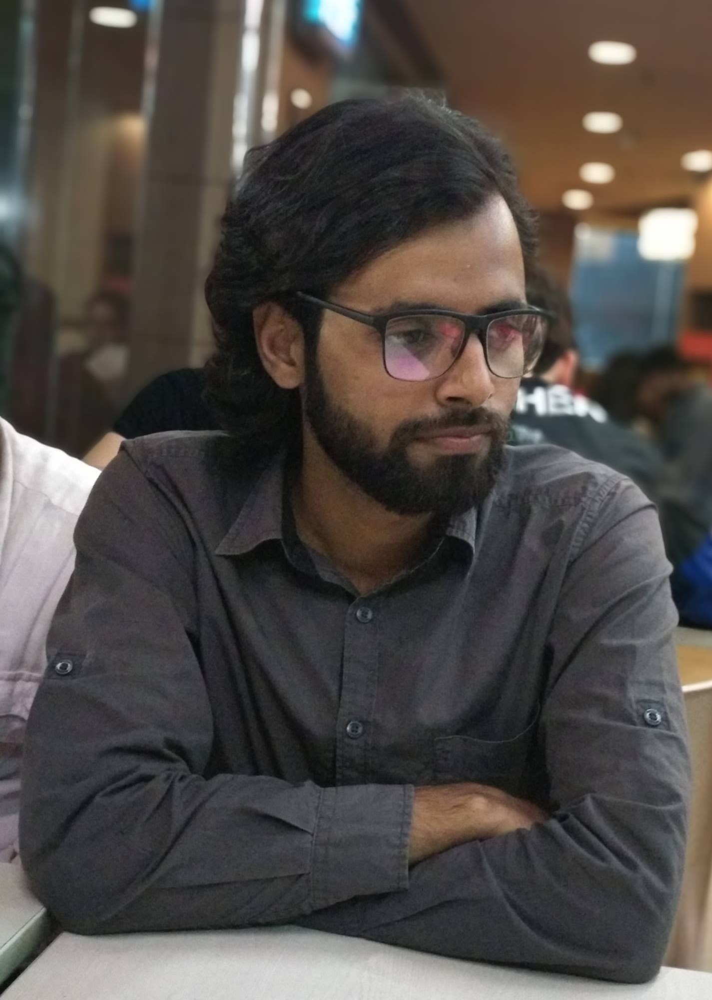

EXPERTISE
- NLP
- Deep Learning
- Machine Learning
TOOLS
- Tensorflow
- PyTorch
- Pandas
- Seaborn
- Python
- HTLM
- MS Office
Pushkar Bhardwaj
Pursuing PhD, Computer Science & Engineering, IITK
MTech, Mechatronics, IIEST Shibpur
BTech, Mechanical Engineering, GLBITM
MTech, Mechatronics, IIEST Shibpur
BTech, Mechanical Engineering, GLBITM
As a first-year PhD scholar, the primary focus of my research under Dr.
Ashutosh Modi is Natural Language Programming for text and speech and
its immense potential for efficient and human-computer understanding.
In addition to this, I would also like to explore the amalgamation of natural language processing with computer vision to enable systems develop an accurate and robust understanding of real-world ecosystems.
In the past, I worked with CNNs to model fault diagnosis for rotating machinery for my MTech project and build a quadcopter operable beyond line of sight for my BTech project.
In addition to this, I would also like to explore the amalgamation of natural language processing with computer vision to enable systems develop an accurate and robust understanding of real-world ecosystems.
In the past, I worked with CNNs to model fault diagnosis for rotating machinery for my MTech project and build a quadcopter operable beyond line of sight for my BTech project.